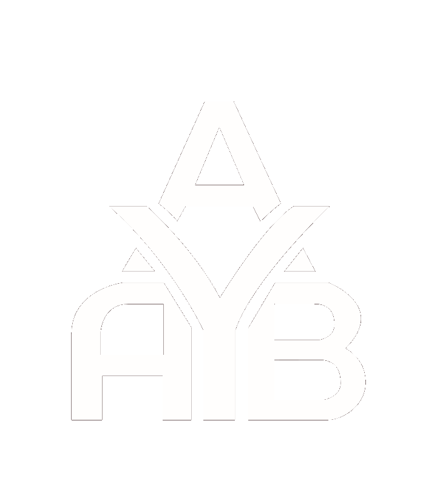

Diseñar y ejecutar proyectos de arquitectura y urbanismo con precisión técnica y sensibilidad estética, transformando cada espacio en un reflejo fiel de las necesidades del cliente y de su entorno.
Consolidarnos como referente en arquitectura y urbanismo contemporáneo, reconocidos por proyectos que integran innovación, sostenibilidad y el más alto nivel de calidad constructiva.
Las letras "AYB" en Cormorant Garamond representan las iniciales del arquitecto, conformando un símbolo reconocible de identidad.
"ARQ. ALFONSO BEJARANO" en Montserrat condensed, peso 300. Transmite elegancia y profesionalismo arquitectónico.
"ARQUITECTURA & URBANISMO" en Montserrat, peso 200, espaciado amplio. Define el campo de especialización.
El logotipo se construye sobre una retícula modular que garantiza proporciones exactas en cualquier escala de reproducción.
Se define como el espacio mínimo de aislamiento alrededor del logo, equivalente a la altura de la letra "A" del isotipo. Ningún elemento externo puede invadir esta zona.
El logotipo nunca debe reproducirse por debajo de los tamaños establecidos, pues perdería legibilidad y calidad de representación.
Tamaño mínimo para uso en sitios web, redes sociales y aplicaciones digitales.
Tamaño mínimo para uso en documentos impresos, tarjetas de presentación y material físico.
Tamaño recomendado para hojas membretadas, planos y documentación técnica profesional.
La paleta cromática oficial transmite elegancia, autoridad y refinamiento. Su correcta aplicación garantiza coherencia en todos los soportes.
Color principal de marca
Color secundario principal
Fondos y tipografía oscura
Acento y hover states
Tipografía Principal — Titulares e Isotipo
Tipografía serif de alta elegancia. Se usa en el isotipo AYB, títulos principales del manual y elementos destacados de la marca.
Tipografía Secundaria — Logotipo y Textos
Tipografía geométrica sans-serif. Se usa en el nombre "ARQ. ALFONSO BEJARANO", subtítulos, cuerpo de texto en documentos y toda la comunicación corporativa.
Uso sobre fondos claros o blancos. Es la versión principal del logo.
Uso sobre el color borgoña de marca o fondos muy oscuros.
Uso en documentos de fax, copias o donde no sea posible el color.
Uso en impresoras monocromáticas o documentación técnica en escala de grises.
Para mantener la integridad de la marca, estas alteraciones están estrictamente prohibidas.
No distorsionar ni deformar las proporciones del logo
No rotar el logotipo en ningún ángulo
No usar colores no autorizados fuera de la paleta oficial
No añadir sombras, brillos o efectos al logotipo
No usar el logo con opacidad reducida o semitransparente
No aplicar gradientes o degradados sobre el isotipo
Así se ve la identidad de ARQ. ALFONSO BEJARANO en sus soportes corporativos reales.